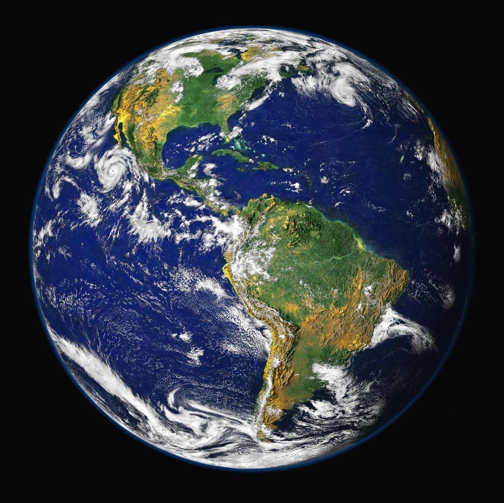

Земята е третата планета в Слънчевата система. Тя е най-голямата от земеподобните планети и единствената, на която според съвременните научни схващания има живот. Земята се е образувала преди около 4,54 милиарда години и скоро след това е придобила единствения си естествен спътник – Луната.
Външната обвивка на Земята се състои от няколко твърди участъка, наречени тектонски плочи. Те извършват бавни движения, които оказват забележимо влияние след милиони години. Около 71% от повърхността на Земята е покрита от соленоводни океани, а останалото са континентите, островите, реките и езерата. Сред планетите на Слънчевата система единствено Земята притежава течна вода. Вътрешността на Земята остава активна, с тънък слой земна мантия, течно външно ядро, пораждащо магнитно поле и твърдо вътрешно ядро.
Според най-разпространената и широко приета теория Земята се е образувала преди четири и половина милиарда години заедно с другите планети от Слънчевата система, която преди това е представлявала газово-прахов облак. Няколко милиона години след формирането си Земята се е сблъскала с една малка протопланета – Тея. Този гигантски сблъсък е създал Луната – единствения естествен спътник на Земята. Отначало гореща и течна, повърхността на Земята постепенно се е охладила. Водата най-вероятно е била пренесена от многобройни метеорити и комети. В тази първична водна среда са се зародили органични молекули и едноклетъчни организми.

Ето някои данни за Земята.
| Отдалеченост от Слънцето | 149 598 262 км. |
| Екваториален диаметър | 12 750 км. |
| Плътност спряма водата | 5,51 пъти |
| Средна температура на повърхността | 15°C |
| Известни луни | 1 |